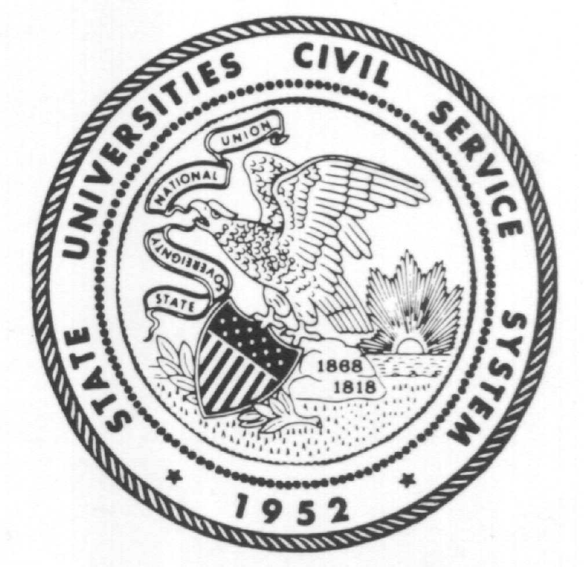
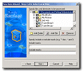

| software |
| home page |
| 5 September-October,1997 - Chicago Travel many web sites to explore. . Chicago Blind Computer Users Network This page has been granted THE MARY WARD SPEECH FRIENDLY BUTTERFLY AWARD COMPUTER USERS NETWORK NEWS Adaptive Technology for the Blind and Visually-Impaired THE COMPUTER NETWORK is a consortium of blind and visually impaired people who want to maintain up-to-date knowledge about computer technology. Network members pool knowledge and resources to help themselves and each other function at their best in this fast-moving electronic age. Newsletters with information of interest to blind computer users everywhere. |
|
|  | . Spring Webnotes Information about new TRACS releases, Workshop Information, New Applications and services, and more. The MANAGEMENT Plus training workshops were developed by American Computer Software to allow you to gather valuable and timely information about your software knowledge to help you improve your business. pdf QuickBooks Integration Information Special Limited Time Offer To QuickBooks Pro 2002 Customers. WebEx Online Meetings American Computer Software is working to bring you the best software experience available. |
|  |